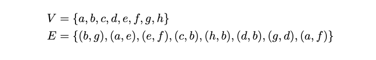

Problems tagged with "connected components"
Problem #100
Tags: connected components, graph theory
An undirected graph with 20 nodes and 30 edges has three connected components: \(A\), \(B\), and \(C\). Connected component \(A\) has 7 nodes. What is the smallest number of edges it can have?
Solution
6
Problem #123
Tags: connected components, graph theory
Let \(G = (V, E)\) be an undirected graph, and suppose that \(u, v, \) and \(w\) are three nodes in \(V\). Suppose that \(u\) and \(v\) are in the same connected component, but \(u\) and \(w\) are not in the same connected component. True or False: it is possible that \(v\) and \(w\) are in the same connected component.
Solution
False.
Problem #144
Tags: connected components, graph theory
Let \(C\) be a connected component in an undirected graph \(G\). Suppose \(u_1\) is a node in \(C\) and let \(u_2\) be a node that is reachable from \(u_1\). True or False: \(u_2\) must also be in the same connected component, \(C\).
Solution
True.
Problem #147
Tags: connected components, graph theory
Suppose \(G = (V, E)\) is an undirected graph. Let \(k\) be the number of connected components in \(G\). True or False: it is possible that \(k > |E|\).
Solution
True.
Problem #150
Tags: connected components, graph theory
Suppose an undirected graph \(G = (V,E)\) has two connected components, \(C_1\) and \(C_2\). Suppose that \(|C_1| = 4\) and \(|C_2| = 3\). What is the largest that \(|E|\) can possibly be?
Solution
Answer: 9. To load a graph with the most edges, make each connected component "fully connected". The most edges we can put in a component with 4 nodes is \(4 * 3 / 2 = 6\), and the most we can put into a component with 3 nodes is \(3 * 2 / 2 = 3\). Therefore, we can put at most 9 edges in this graph.
Problem #211
Tags: connected components
Let \(G = (V,E)\) be an undirected graph with:

True or False: \(\{b, d, g\}\) is a connected component of this graph.
Solution
False. The connected components of this graph are \(\{a, e, f\}\) and \(\{b, c, d, g, h\}\).
Remember: a connected component has to contain all nodes reachable from any node in the component. While \(b\), \(d\), and \(g\) are all reachable from one another (and are ``connected''), they do not form a connected component because there are more nodes reachable from this group: namely, \(h\) and \(c\).
Problem #221
Tags: connected components
Let \(G\) be an undirected graph, and suppose \(u\) and \(v\) are two nodes belonging to the same connected component of \(G\), with \(v\) being a neighbor of \(u\). That is, the edge \((u, v)\) is in \(G\).
Let \(G'\) be the graph obtained from \(G\) by deleting the edge \((u, v)\). True or False: \(u\) and \(v\) must still be in the same connected component of the new graph, \(G'\).
Solution
False
Problem #233
Tags: connected components
Let \(G = (V,E)\) be an undirected graph with:

True or False: \(\{a, d, e\}\) is a connected component of this graph.
Solution
False
Problem #235
Tags: connected components
Suppose that every node in an undirected graph with \(n\) nodes has degree 2.
True or False: \(G\) must have one connected component.
Solution
False
Problem #236
Tags: connected components
Suppose an undirected graph has 3 connected components and 7 nodes. What is the maximum number of edges it can have?
Problem #248
Tags: connected components
Let \(G = (V, E)\) be an undirected graph, and suppose that \(u, v, \) and \(w\) are three nodes in \(V\). Suppose that \(u\) and \(v\) are in the same connected component, but \(u\) and \(w\) are not in the same connected component. True or False: it is possible that \(v\) and \(w\) are in the same connected component.
Solution
False